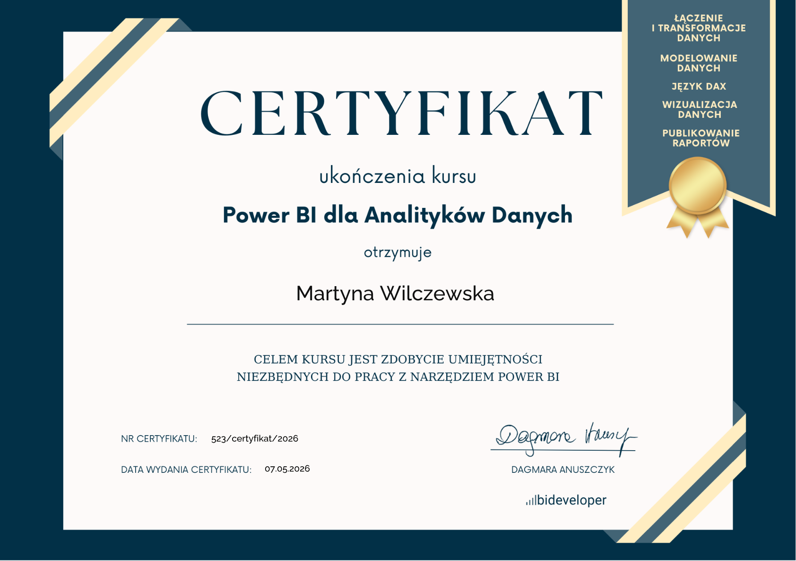
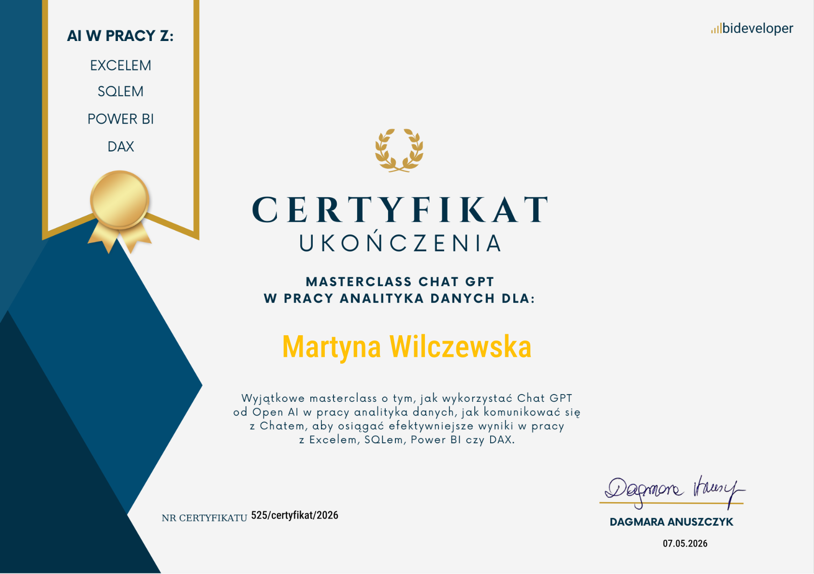
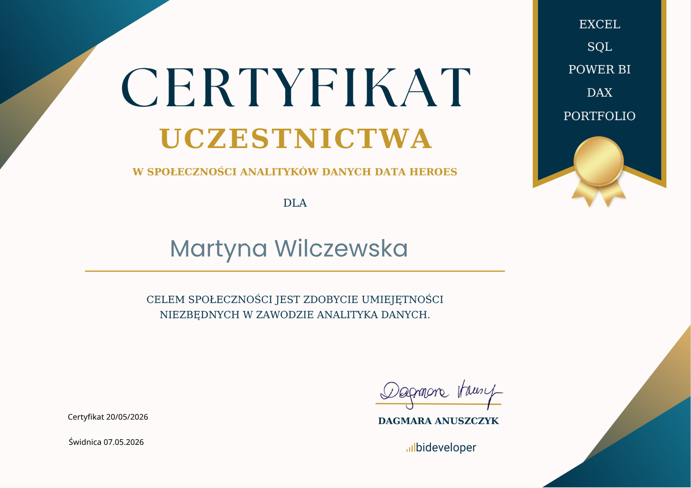
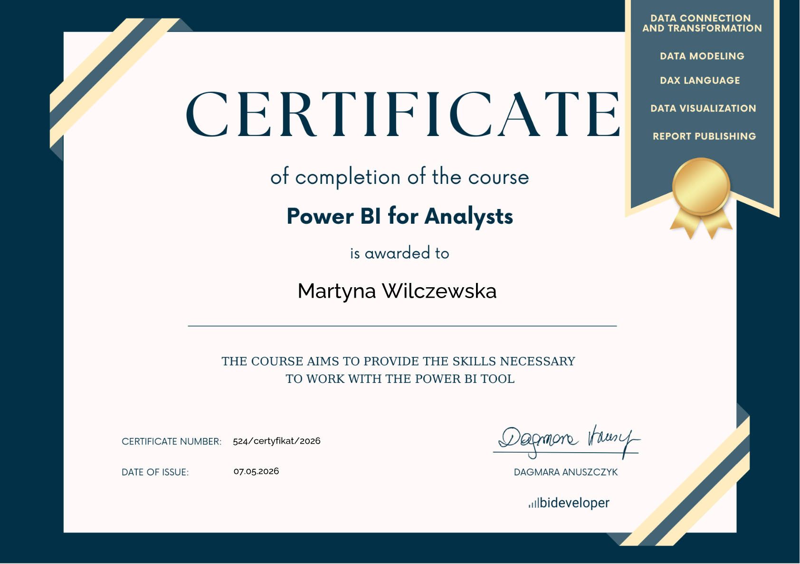

Buduję interaktywne dashboardy w Power BI i wyciągam z danych konkretne wnioski. Łączę świeże kompetencje analityczne z ośmioletnim doświadczeniem w biznesie.
Przez 8 lat w sprzedaży i obsłudze klienta (m.in. branża optyczna i retail) nauczyłam się rozumieć potrzeby klienta i realizować twarde cele. Dziś łączę to doświadczenie z analizą danych i zamieniam chaos surowych informacji w przejrzyste dashboardy w Power BI.
Jako absolwentka kursu Junior Data Analyst (Data Heroes / bideveloper) nie tylko „robię raporty". Szukam w danych odpowiedzi na pytania o sprzedaż, trendy i efektywność.
Wierzę, że najlepszy analityk to taki, który potrafi wytłumaczyć skomplikowane zależności osobie nietechnicznej. Po latach pracy z ludźmi potrafię budować most między danymi a biznesem.
📍 Gdańsk · otwarta na pracę zdalną i hybrydową · angielski B1
Czym się zajmuję
Trzy programy, w których pracuję na co dzień: od surowych danych po gotowe wnioski.
Modelowanie danych, własne miary DAX, interaktywne raporty, KPI z celami i nawigacja między stronami.
Zapytania do baz danych: SELECT, JOIN, agregacje, filtrowanie i grupowanie danych.
Tabele przestawne i funkcje logiczne: WYSZUKAJ.PIONOWO, JEŻELI, SUMA.WARUNKÓW, wykresy.
W pracy analityka wykorzystuję też
Statystykę opisową w interpretacji danych · AI (ChatGPT) we wsparciu zapytań SQL i miar DAX · Komunikatywność i jasne prezentowanie wyników osobom nietechnicznym




Szukasz do zespołu analityka, który rozumie biznesową stronę danych? Zapraszam do kontaktu.